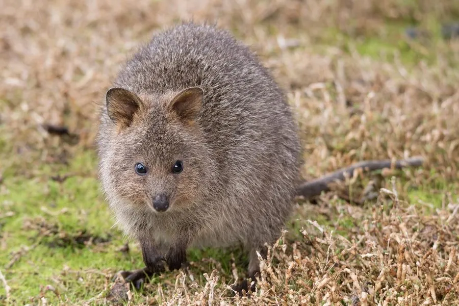

哺乳动物 · 动物界
短尾矮袋鼠 Setonix brachyurus

澳大利亚西南部的小型袋鼠，圆脸短尾、看起来总在微笑，主要生活在罗特尼斯岛，因栖息地减少被列为易危。
- 分类
- 门脊索动物门纲哺乳纲目双门齿目科袋鼠科属短尾矮袋鼠属
- 栖息环境
- 澳大利亚西南部的灌丛、林地和岛屿
- 地理分布
- 澳大利亚西南部，主要种群在罗特尼斯岛
- 保护级别
- IUCN 易危（VU）；非中国分布物种
物种志
短尾矮袋鼠体长 40–54 厘米，尾长 25–30 厘米，体重 2.5–5 千克。它的身体矮壮，脸圆、耳朵短，尾巴较短，毛色为灰褐至红棕色，看起来像在微笑，因此被称为“世界上最快乐的动物”。
短尾矮袋鼠分布于澳大利亚西南部，主要种群在罗特尼斯岛和附近大陆的灌丛中。它夜行性，以树叶、草、种子和茎为食，会反刍食物，能在缺水的环境中从植物中获取水分。短尾矮袋鼠性情温和，允许人类靠近，是罗特尼斯岛著名的旅游吸引物。雌性妊娠期约 27 天，幼仔在育儿袋中生活约 6 个月，寿命约 10 年。由于栖息地破坏、狐狸和猫的捕食，短尾矮袋鼠被列为易危。
形态与习性
- 食性树叶、草、种子与茎
- 体长40–54 cm，尾长 25–30 cm
- 体重2.5–5 kg
- 寿命约 10 年
- 繁殖妊娠约 27 天，育儿袋约 6 个月
- 特征圆脸短尾，嘴角上扬如微笑
趣味知识
- 短尾矮袋鼠圆脸短尾，嘴角上扬，被称为“微笑袋鼠”。
- 它主要在罗特尼斯岛生活，是当地著名的旅游名片。
- 短尾矮袋鼠能从植物中获取水分，耐旱能力很强。